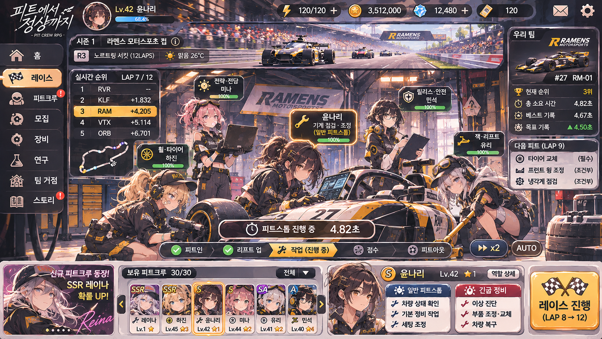

AMBER FOX / PIT CREW
피트크루 키우기
SEASON 01
노스링 서킷
00:00.00
일시정지
새 레이스
AF
RACING
⚑ 레이스
01 / 루키 컵
6개 팀
3랩 · 의무 피트 1회
연결 검증용 프로토타입
LIVE RACE
LAP 1 / 3
카메라: 드라이버 시점
속도 ×2
그리드 출발
1인칭 2D 중계 · 실제 차량 ID 연동
PIT GARAGE
앰버 폭스 레이싱
차량 주행 중

정비장 전체 구도 · 분리 프레임 적용 전
피트 대기
NEXT PIT · LAP 2
고은채
휠 · 타이어
레오
잭 · 리프트
윤나리
기계 점검 · 조정
소피아
진단 · 전략
올리비아
릴리스 · 안전
RACE RADIO
레이스가 시작되었습니다.
CHEQUERED FLAG
다시 레이스